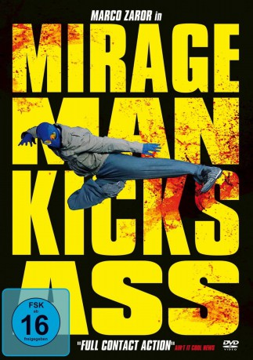

#8500 Mirageman Kicks Ass
Alternativ: Mirageman
 
 IMDB-Wertung: 6.6 / 10
IMDB-Wertung: 6.6 / 10  Metascore: 0
Metascore: 0 
Der junge Maco lebt ein einsames Leben, seit seine Eltern ermordet und sein den Angriff überlebender Bruder in eine Nervenheilanstalt eingewiesen wurden. Als Sicherheitsmann in einem Nachtclub verdient er sich seinen Lebensunterhalt. Doch eines Tages schreitet er ein, als er Zeuge eines brutalen Raubüberfalls wird und rettet dabei eine Reporterin, die über den maskierten Helden berichtet. Maco bemerkt, wie sein Bruder positiv auf die Nachricht über diesen Superhelden reagiert. Und so fasst er einen folgenschweren Entschluss: Er wird Mirage Man, ein Superheld, der fortan für das Gute kämpft.
Jahr: 2007
Dauer: 83 Minuten
FSK: 16
Land: Chile Studio: Magnet ReleasingTonspuren:
Untertitel: Deutsch,
Auflösung: 1080p (1920x1064) Größe: 7004 MB
Genre: Action, Komödie, Krimi
Regisseur: Ernesto Díaz Espinoza
Drehbuch: Ernesto Díaz Espinoza
Soundtrack: Rocco
Darsteller:
 Marko Zaror als Maco Gutiérrez / Mirageman
Marko Zaror als Maco Gutiérrez / Mirageman- Eduardo Castro als Rony Lozano
- Ernesto Díaz Espinoza als Ladrón de Quioscos
- María Elena Swett als Carol Valdivieso
- Ariel Mateluna als Tito Gutiérrez
- Mauricio Pesutic als Juan Moli
- Iván Jara als Pseudo-Robin
- Jack Arama als Doctor Sartori
- Gina Aguad als Lectora de Noticias
- Arturo Ruiz Tagle als Jefe Red Pedofilia
- Pablo Díaz als Cliente Topless
- Francisco Castro als Villano Capoeira
- Esteban Vitagliano als Villano Tae Kwon Do
- Juan Pablo Miranda als Ladrón Casa
- Juan Pablo Aliaga als Padre Niña Secuestrada
- Gabriela Sobarzo als Enfermera Juanita
- Sofía Salas als Enfermera Sofía
- Hugo Núñez als Loquito Pincel
- Paula Leoncini als Mujer Asaltada
- Lucky Buzio als Carterista 4
- Derek Wade als Psuedo-Robin
Datei: X:\2007(G-M)\Mirageman Kicks Ass (2007, FSK16, 1920x1064).mkv seit 12.03.2018
Festplatte: HD 2007(A-Z)-2008(A-F)
 Es gibt insgesamt 64 Filme in der Gruppe '2007(G-M)'
Es gibt insgesamt 64 Filme in der Gruppe '2007(G-M)'